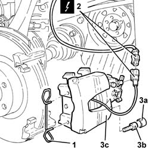
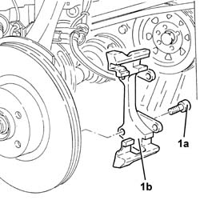
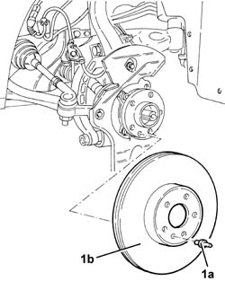
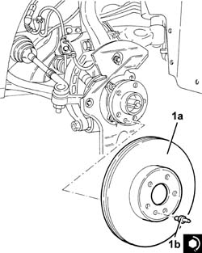
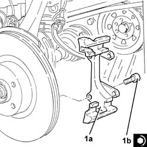
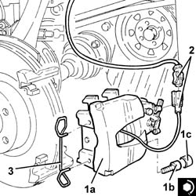

3310A14 FRONT DISC BRAKES - R.R.
- Path
- Procedures > 33 BRAKING SYSTEM > 3310 DISC BRAKES > 3310A FRONT DISC BRAKES > 3310A14 FRONT DISC BRAKES - R.R.
- Kind
- repair procedure (removal / refitting; the operation number is the code)
- Applies to
- all engines; all production periods
- Interactive page
- https://sloeber94.github.io/elrnDB-a147/en/#/3025191
Applies to: engines: 1.6 TS, 2.0 TS, 1.9 JTD 8V, 1.9 JTD 16V; all production periods
 Removing
Removing
 Refitting
RefittingPosition the vehicle on the ramp.
Ensure that the ignition key is in the OFF position, then disconnect the negative battery terminal (-).
 | Name | Connector |
|---|---|---|
- | Battery |
Proceed with removal 4450B12 front or rear wheels (two) - r+r .
Proceed with the removal 3330E10 FLEXIBLE PIPE (one), left or right, to front brake calipers - R.R . (Right and left sides).
1. Remove the spring fixing the brake calipers to the brackets.
2. Disconnect the electrical connections for the brake pad wear cables.
| Name | Connector |
|---|---|---|
2 | Left brake pad wear sensor (switch) |
3. Remove the protective plugs (3a), undo the bolts (3b) and remove the front brake calipers (3c) with the pads.

Applies to: engines: 1.6 TS, 2.0 TS, 1.9 JTD 8V, 1.9 JTD 16V; all production periods
1. Undo the bolts (1a) and remove the front brake caliper brackets (1b).

Applies to: engines: 1.6 TS, 2.0 TS, 1.9 JTD 8V, 1.9 JTD 16V; all production periods
1. Unscrew the bolt (1a) and remove the front brake discs (1b).

Applies to: engines: 1.6 TS, 2.0 TS, 1.9 JTD 8V, 1.9 JTD 16V; all production periods
Refitting
Removing1. Place the front brake discs (1a) back in their seatings and secure them tightening the bolt (1b) to the recommended torque.
 | Fastening | Component | Ø | Value (daNm) |
|---|---|---|---|---|
1b | Pin | FRONT BRAKE DISC. | M8 | (Wheel hub side) 1.0 ÷ 1.4 |

Applies to: engines: 1.6 TS, 2.0 TS, 1.9 JTD 8V, 1.9 JTD 16V; all production periods
1. Place the front brake discs (1a) back in their seatings and secure them tightening the bolt (1b) to the recommended torque.
| Fastening | Component | Ø | Value (daNm) |
|---|---|---|---|---|
1b | Bolt | FRONT BRAKE CALIPER BRACKET | M12 | (Front steering knuckle side) 11.1 ÷ 12.3 |

Applies to: engines: 1.6 TS, 2.0 TS, 1.9 JTD 8V, 1.9 JTD 16V; all production periods
.
slacken the bleed screw;
insert the end of a transparent pipe into the bleed screw hole;
using an ordinary container with the recommended brake fluid, insert brake fluid into the caliper until air bubbles emerge from the threaded hole where the hose is connected;
tighten the bleed screw.
1. Place the front brake calipers (1a) complete with pads in their seatings, fix them tightening the bolts (1b) to the specified torque and fit the protective plugs (1c).
| Fastening | Component | Ø | Value (daNm) |
|---|---|---|---|---|
1b | Bolt | FRONT BRAKE CALIPER ASSEMBLY | M12 | (Bracket side) 11.7 |
2. Connect the electrical connection for the brake pad wear cable.
3. Refit in their seats the clips securing the brake calipers to the mounting brackets.

Applies to: engines: 1.6 TS, 2.0 TS, 1.9 JTD 8V, 1.9 JTD 16V; all production periods
Proceed with the refitting 3330E10 FLEXIBLE PIPE (one), left or right, to front brake calipers - R.R . (Right and left sides).
Bleed the air from the hydraulic braking system 3330A14 HYDRAULIC BRAKING SYSTEM - Bleed air .
Proceed with removal 4450B12 front or rear wheels (two) - r+r .
Connect the negative (-) battery terminal.
Applies to: engines: 3.2 V6; all production periods
Removing
RefittingProceed with removal 4450B10 Front WHEEL (one) - R.R. .
Proceed with removal 3310A30 FRONT BRAKE CALIPER (one) - R.R. .
Proceed with removal 3310A48 front brake disc - r r .
Applies to: engines: 3.2 V6; all production periods
Refitting
RemovingProceed with refitting 3310A48 front brake disc - r r .
Proceed with refitting 3310A30 FRONT BRAKE CALIPER (one) - R.R. .
Top up the brake-clutch fluid level 0010T64 brake and or clutch fluid check level and top up as necessary .
Bleed the air from the hydraulic braking system 0010T65 hydraulic brake system bleed air .
Proceed with refitting 4450B10 Front WHEEL (one) - R.R. .
Topics linked from this page (10)
- 0010T64 brake and or clutch fluid check level and top up as necessary
- 0010T65 hydraulic brake system bleed air
- 3310A30 FRONT BRAKE CALIPER (one) - R.R.
- 3310A48 front brake disc - r r
- 3330A14 HYDRAULIC BRAKING SYSTEM - Bleed air
- 3330E10 FLEXIBLE PIPE (one), left or right, to front brake calipers - R.R .
- 4450B10 Front WHEEL (one) - R.R.
- 4450B12 front or rear wheels (two) - r+r
- A1B Battery ( Connectors )
- K20 Left brake pad wear sensor (switch)